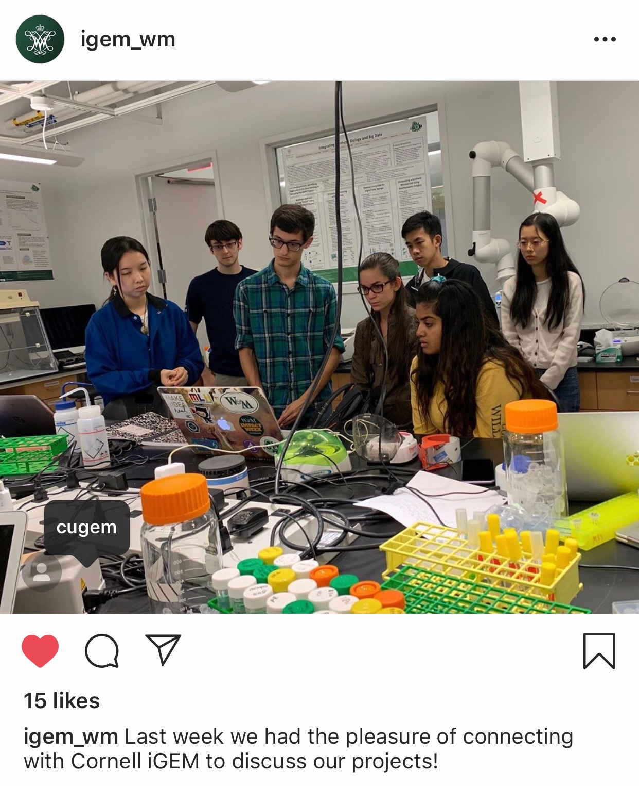

This year, Cornell iGEM had the honor of working with several different iGEM teams across the globe on both technical- and outreach-oriented collaborations. We received valuable feedback on how to improve our informational booklet designed to educate members of the community on the issue of harmful algal blooms (HABs). We also mentored a new high school team and helped them get up-to-speed with how the iGEM competition runs. Finally, we worked with another team to optimize and test components of the Wet Lab aspects of our respective projects. Through these partnerships, our team was able to expand upon the possibilities of collaborative synthetic biology and learn more about how we can solve big issues using microscopic tools.
Cornell iGEM sought to demystify the subject of HABs by creating an informational booklet that summarizes the background, prevalence, and existing treatment methods for HABs. We sent the first draft of our booklet to Ohio State iGEM and Toronto iGEM to obtain feedback on the content and formatting of our booklet to ensure it is readily accessible to readers. Below, we have detailed the feedback provided to us by these teams and how we incorporated their suggestions into the final draft presented on our Wiki.
The members of the Ohio State iGEM team found our booklet very informative and well-cited. However, their feedback mentioned that our booklet had too much technical detail that occasionally took away from the primary focus of each section, so we cut down and made our sections more concise. We also took their advice to include a brief sentence explaining the examples listed on the Current Solutions page before discussing their respective pros and cons.
Toronto iGEM recommended reformatting the Current Solutions page to make it easier for readers to compare between example solutions and to recognize their respective strengths and weaknesses. Going off of this suggestion, our team made modifications to the Current Solutions section and also decided to include an additional page recapitulating the ways in which our project covers the weak points of other solutions.

Over the summer, our team mentored the Korea_HS iGEM team after they reached out to us with questions about the iGEM competition process. We held an initial Skype meeting on July 6th, 2019, where we shared our project ideas and our experiences on iGEM. As it was Korea_HS’s first year participating in the competition, we provided insight into what iGEM is and what Cornell iGEM has done as a team in the past. In regards to the competition itself, Korea_HS had questions regarding the characterization section of the Bronze Medal criteria and the formatting of the presentation and the poster, so we explained the characterization section and provided tips on how to efficiently and effectively prepare for each portion of the competition. We had a follow-up meeting on August 3rd, 2019, for an update on the team’s progress on their project and to answer any remaining questions they had regarding the competition.

On September 22nd, Cornell iGEM held a Skype meeting with the members of W&M iGEM to discuss the integration
of their curli fibers into our bioreactor. Since curli fibers enable biofilm development, our team sought to
use them to improve the efficiency of trapping our bacteria in alginate beads. After we received the DNA
parts from W&M iGEM, we tested whether the efficiency of our bioreactor was higher with or without the curli
fibers. [results?]
Our team also forwarded our alginate bead formation protocol to W&M iGEM so they could look for the
experimental conditions that promote optimized bacterial adhesion onto the alginate beads. [results?]
Cornell iGEM held a Skype call with members of SZTA_Szeged_HU iGEM on September 14th. We exchanged public engagement surveys as a way to broaden the scope of our respective projects by gaining feedback from an international perspective.